一、用力的矢量三角形法巧解物体平衡问题
如果物体受三个共点力作用而保持平衡，则这三个力必组成一个闭合的矢量三角形。如果其中某个力的大小、方向发生变化或物体的位置发生变化，平衡就会破坏。如果物体要重新处于平衡状态，则所受各力将发生变化，重新平衡后，这三个力又组成一个闭合矢量三角形。只要对比变化前后各力关系的矢量三角形图，就能比较直观地看出条件变化时各量的变化情况。
要正确地作出变化前后各力的矢量三角形，就要正确地判断变化过程中各力的变化情况。在分析过程中，要以平衡条件为依据，根据题设在变化过程中的不变量，以及各变化量与不变量之间的关系，分析其变化情况。
例 1绳固定点上移，张力与压力如何变
如图 2-1 所示，\( AB \) 为轻质硬杆，\( AC \) 为轻绳，\( A \) 点挂一重物 \( G \)，整个装置处于平衡状态。现保持 \( AB \) 杆水平，重物 \( G \) 不动，将绳的固定点从 \( C \) 向上移到 \( C' \)，则绳的拉力 \( T \) 和杆所受到的压力 \( N \) 将如何变化。
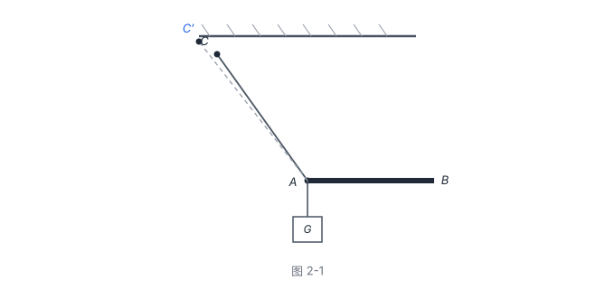
解以 \( A \) 点为研究对象，\( A \) 点受重物的拉力 \( F \)（\( F = G \)）、杆对 \( A \) 点的支持力 \( N \)、绳 \( AC \) 的拉力 \( T \) 作用而保持平衡状态。由平衡条件可知，这三个力的合力为零，即 \( F \)、\( N \)、\( T \) 组成一个闭合的矢量三角形。在 \( AC \) 绳向上移动的过程中，力 \( F \) 的大小和方向均保持不变，且 \( N \) 的方向也保持不变，\( T \) 与水平方向的夹角变大，由此可以作出一系列闭合矢量三角形，如图 2-2 所示。
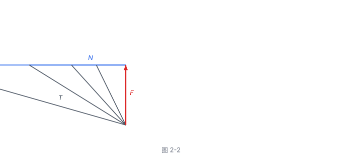
由图 2-2 可知，当 \( AC \) 绳上移到 \( AC' \) 位置时，\( T \)、\( N \) 均变小。故绳子张力 \( T \) 和杆所受到的压力 \( N \) 都将变小。
例 2半球架上悬挂点移动
如图 2-3 所示，将一物体用两根等长的绳 \( OA \)、\( OB \) 悬挂在半球形架子上，\( B \) 点固定不动，在悬挂点 \( A \) 由位置 \( C \) 向位置 \( D \) 移动的过程中，物体对 \( OA \) 绳的拉力的变化是（ ）。
A. 由小变大 B. 由大变小 C. 先减小后增大 D. 先增大后减小
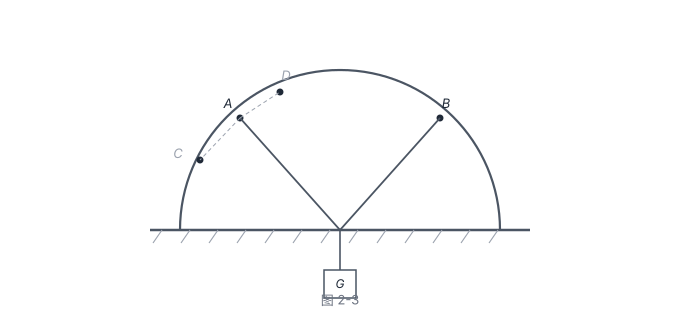
解显然，这是三力共点的平衡问题，在 \( AO \) 绳由 \( C \) 向 \( D \) 移动的过程中，三力始终处于平衡状态，它们必构成一个闭合的矢量三角形。因此，我们可以用力的矢量三角形法则来进行讨论。
因重力 \( G \) 的大小和方向始终不变，\( BO \) 绳的拉力方向不变，在 \( AO \) 绳由 \( C \) 向 \( D \) 移动的过程中，我们可以作出一系列的闭合三角形，如图 2-4 所示。
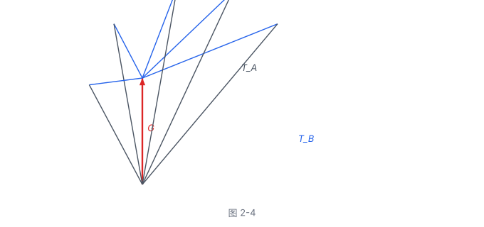
由图 2-4 可知：当 \( AO \) 绳由 \( C \) 向 \( D \) 移动的过程中，\( OB \) 绳的拉力 \( T_B \) 由小变大，\( AO \) 绳的拉力 \( T_A \) 由大变小，又由小变大，故此题答案应该是 C。
例 3中点挂重改挂偏点
如图 2-5 所示，绳的两端 \( A \)、\( B \) 分别被固定在天花板上，开始时，绳的中点 \( O \) 挂一重物，如图中虚线所示。此时绳 \( AO \) 和 \( BO \) 的拉力分别为 \( F_1 \) 和 \( F_2 \)。若把重物改挂在图中实线所示位置 \( O' \)，绳 \( AO \) 的长度小于绳 \( BO' \) 的长度，这时绳 \( AO' \) 和 \( BO' \) 的拉力 \( F_1' \)、\( F_2' \) 与 \( F_1 \)、\( F_2 \) 比较，则（ ）。
A. \( F_1' > F_1, F_2' > F_2 \) B. \( F_1' < F_1, F_2' < F_2 \) C. \( F_1' > F_1, F_2' < F_2 \) D. \( F_1' < F_1, F_2' > F_2 \)
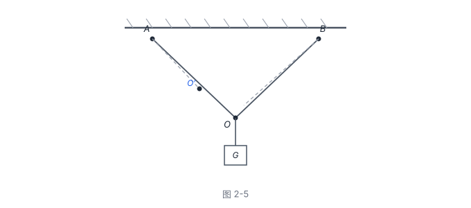
解当重物悬挂于中点时，绳 \( AO \)、\( BO \) 的拉力 \( F_1 \)、\( F_2 \) 与重力 \( G \) 相平衡。作力的矢量三角形如图 2-6 中虚线所示，其中 \( G \) 的大小和方向是不会改变的。当悬点 \( O \) 移到 \( O' \) 时，绳 \( AO' \) 的拉力 \( F_1' \) 与竖直方向的夹角变小了，绳 \( BO' \) 的拉力 \( F_2' \) 与竖直方向的夹角变大了，如图 2-6 中的实线所示。显然有 \( F_1' > F_1 \)，\( F_2' < F_2 \)，因此此题的正确答案应该是 C。
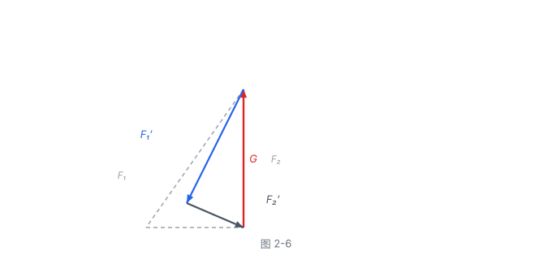
例 4改用另一根绳来拉
如图 2-7 所示，木棒 \( OP \) 可绕 \( O \) 点在竖直平面内转动，\( P \) 端被绕过定滑轮吊有重物的水平绳和绳 \( PQ \) 拉住，使棒与地面垂直。棒的质量、绳的质量及绳与滑轮的摩擦可忽略，绳 \( PQ \) 的拉力为 \( T_1 \)、棒对地面的压力为 \( N_1 \)。若改用绳 \( PQ' \) 来拉，使棒仍与地面垂直，绳 \( PQ' \) 的拉力为 \( T_2 \)、棒对地面的压力为 \( N_2 \)，则（ ）。
A. \( T_1 > T_2, N_1 > N_2 \) B. \( T_1 < T_2, N_1 < N_2 \) C. \( T_1 > T_2, N_1 < N_2 \) D. \( T_1 < T_2, N_1 > N_2 \)
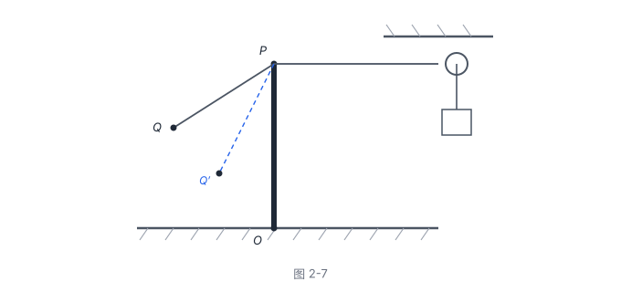
解棒与地面垂直时，两绳的拉力的合力必沿此棒竖直向下，这合力的值等于棒对地面的压力 \( N \) 的值。当用绳 \( PQ \) 来拉时，力的三角形如图 2-8 中实线所示；当改用 \( PQ' \) 来拉时，水平绳的拉力仍为 \( T \) 不变，绳 \( PQ' \) 与水平方向的夹角增大了，其拉力 \( T_2 \) 与水平绳的拉力 \( T \) 的合力 \( N_2 \) 的方向仍沿棒竖直向下，如图 2-8 中虚线所示。可见，\( T_1 < T_2 \)，\( N_1 < N_2 \)，故此题的正确答案为 B。
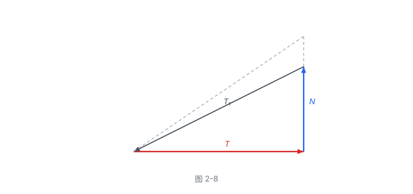
例 5加大 B 的重量，各力怎么变
如图 2-9 所示，桌面是粗糙的，绳 \( AO \) 保持水平。当物体 \( B \) 的重量增加时，物体 \( A \) 仍然保持静止，此时有关力的变化，下面哪些说法是正确的（ ）。
A. 绳 \( CO \) 的拉力增加 B. 绳 \( BO \) 的拉力增加 C. 绳 \( AO \) 的拉力增加 D. 桌面对物体 \( A \) 的摩擦力增加
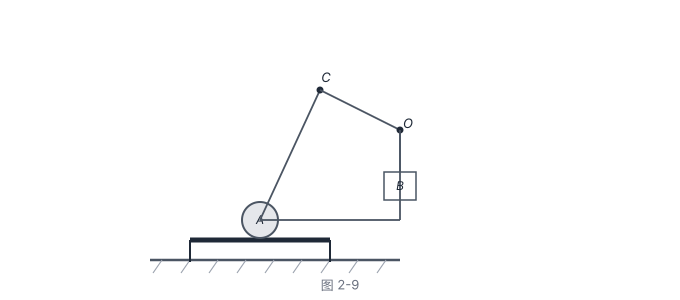
解设绳 \( AO \)、\( CO \) 的拉力分别为 \( T_1 \)、\( T_2 \)，这两力的合力与物体 \( B \) 的重力平衡，故可画出力的矢量 \( \triangle ACB \)，如图 2-10 所示。在题设条件下，两绳的拉力方向不变，因此，当物体 \( B \) 的重力由 \( G \) 增加到 \( G' \) 仍然平衡时两绳的拉力都增加了，如图 2-10 中的 \( B'A \) 和 \( AC' \)。而桌面对物体 \( A \) 的静摩擦力随 \( AO \) 拉力的增加而增加，绳 \( BO \) 的拉力随物体 \( B \) 的重力的增加而增加。可见答案 A、B、C、D 均正确。
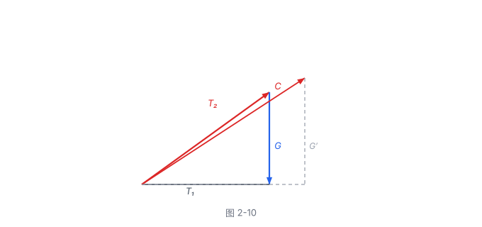
例 6减小木板倾角
如图 2-11 所示，一球卡在竖直墙和木板 \( AB \) 之间，不计摩擦，当减小木板与水平面的夹角 \( \alpha \) 时，球对墙的压力将（ ），对木板的压力将（ ）。
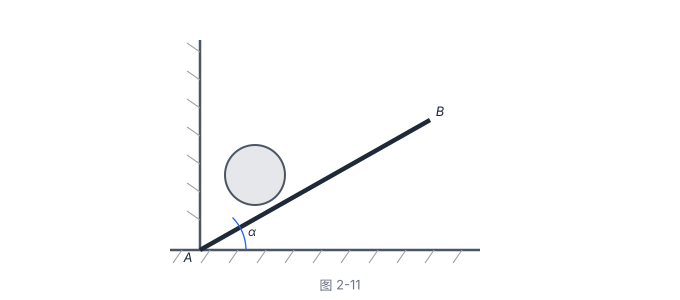
解当木板与水平面的夹角为 \( \alpha \) 时，根据球的受力情况可画出力的矢量三角形如图 2-12 中虚线所示。其中 \( N_1 \) 是墙对球的弹力，\( N_2 \) 是木板对球的弹力。因 \( G \) 的大小和方向都不变，\( N_1 \) 的方向也不会变化，故 \( \alpha \) 变小时，\( N_1 \)、\( N_2 \) 都减小，如图 2-12 中实线所示。球对墙和木板的压力分别是 \( N_1 \)、\( N_2 \) 的反作用力，其值必然与 \( N_1 \)、\( N_2 \) 同时减小，故上面两空格都应填「变小」。
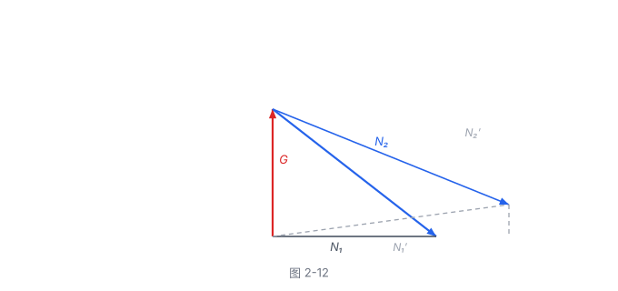
例 7带子长些还是短些容易断
如图 2-13 所示，用两条等长的轻质细带，提着一个重为 \( G \) 的书包，在细带长短不同的条件下，哪种情况带子易断？
解设带长时两拉力为 \( F_1 \)、\( F_2 \)，带短时两拉力为 \( F_1' \)、\( F_2' \)。在这两种情况下拉力 \( F \) 的大小、方向都不变，等于 \( G \)。作力的矢量三角形如图 2-14 所示，从图中可以看出 \( F_1' > F_1 \)，\( F_2' > F_2 \)，即带短时受力较大，易断；反之带长时受力较小，不易断。
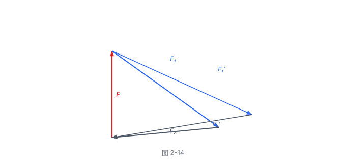
例 8绳端下移后再平衡
如图 2-15 所示，支杆 \( BC \) 用铰链固定于 \( B \)，\( C \) 端为一滑轮，重物上系一绳经滑轮固定于墙上 \( A \) 点，若杆与滑轮及绳子的质量、摩擦均不计，将绳端 \( A \) 点沿墙稍向下移，再使之平衡，则（ ）。
A. 绳的拉力、\( BC \) 杆受的压力都增大 B. 绳的拉力减小，\( BC \) 杆受的压力增大
C. 绳的拉力不变，\( BC \) 杆受的压力增大 D. 绳的拉力、\( BC \) 杆受的压力都不变
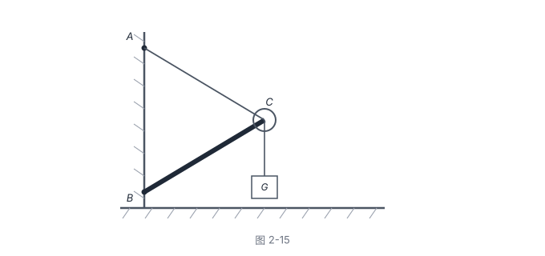
解两段绳的拉力保持与物体的重力等值，杆平衡时，两段绳的拉力的合力沿杆的方向，故画出力的矢量三角形 \( ABC \) 如图 2-16 所示。当绳的 \( A \) 点下移时，两段绳的拉力的大小没变，而且竖直段绳的拉力方向也不变，这时两段绳的合力方向仍沿杆的方向，故合力 \( N' \) 与墙的夹角将变小，如图 2-16 中 \( \triangle AB'C \) 所示，可见压力 \( N \) 增大。C 为正确答案。
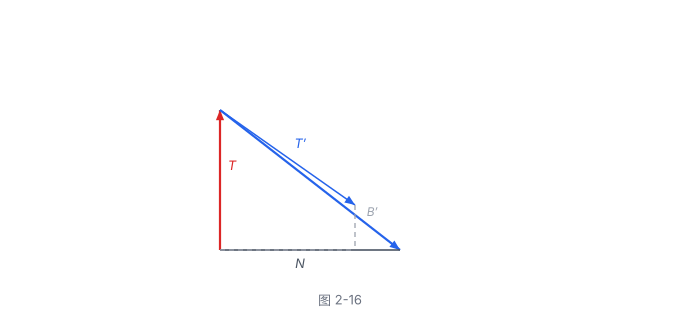
例 9档板缓慢转到水平
如图 2-17 所示，一球卡在竖直板和斜面之间，不计摩擦，当板以 \( A \) 端为轴在竖直面内沿逆时针方向缓慢旋转到水平面的过程中，档板对球的作用力将（ ），斜面对球的支持力将（ ）。
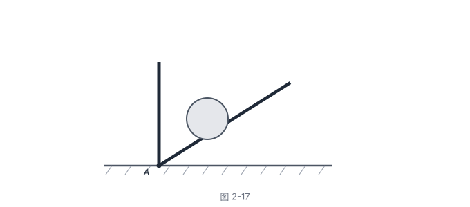
解当档板竖直时，球处于平衡状态，受重力 \( G \)、档板的作用力 \( N_1 \)、斜面的支持力 \( N_2 \) 作用，此时作出 \( G \)、\( N_1 \)、\( N_2 \) 的矢量三角形如图 2-18 中实线所示。当档板在缓慢旋转的过程中，可以认为球处于平衡状态，且重力 \( G \) 的大小和方向不变，斜面对球的支持力的方向也不变，但档板对球的作用力的方向沿逆时针方向旋转，由此可以作出一系列力的矢量三角形，如图 2-18 中虚线所示。
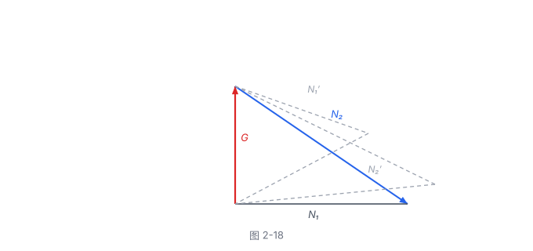
由图 2-18 可知，档板以 \( A \) 点为轴，在竖直面内沿逆时针方向缓慢旋转的过程中，档板对球的作用力 \( N_1 \) 由大变小，再由小变大，最后等于球的重力；而斜面对球的支持力由大变小，最后等于零。故此题第一空格应填「由大变小，再由小变大，最后等于球的重力」；第二空格应填「由大变小，最后等于零」。
例 10人沿梯子向上爬
如图 2-19 所示的梯子（质量忽略不计）斜靠在光滑的墙壁上，令有一重为 \( G \) 的人从地面沿梯子向上爬。设地面的摩擦力足够大，在人上爬的过程中，墙壁对梯子的支持力为 \( N \)、地面对梯子的作用力为 \( F \)，则 \( N \)、\( F \) 的变化是（ ）。
A. \( N \) 由小变大，\( F \) 由大变小 B. \( N \) 由小变大，\( F \) 由小变大 C. \( N \) 由大变小，\( F \) 由大变小 D. \( N \) 由大变小，\( F \) 由小变大
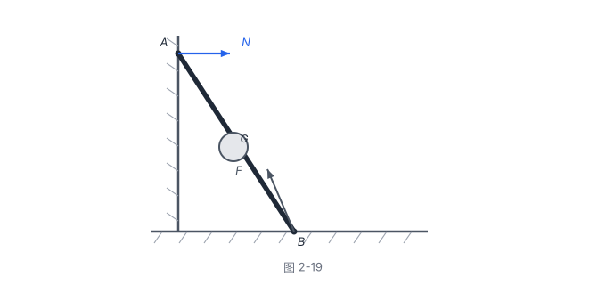
解梯子一共受到三个力的作用，即人的重力 \( G \)、墙壁的支持力 \( N \) 和地面的作用力 \( F \)，如图 2-19 所示。\( F \) 是静摩擦力 \( f \) 和地面对梯子的支持力 \( N_{\text{地}} \) 的合力。因梯子处于平衡状态，所以三力的作用线必须共点，并构成闭合三角形。为此，可作出如图 2-20 所示的系列闭合三角形。
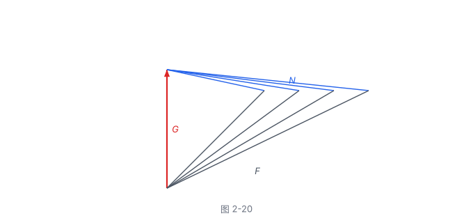
如图 2-20 所示，墙壁对梯子的支持力 \( N \) 由小变大、方向始终与墙壁垂直不变；地面的作用力 \( F \) 将由小变大，其方向与地面的夹角逐渐减小。由此可知，答案 B 是正确的。
例 11重物由 B 向 A 移动
如图 2-21 所示，横梁（质量不计）的 \( A \) 端用铰链固定在墙壁上，\( B \) 端用细绳悬挂在墙壁的 \( C \) 点，当重物 \( G \) 由 \( B \) 向 \( A \) 移动的过程中，在 \( A \) 点，墙壁对横梁的作用力的变化是（ ）。
A. 由小变大，方向沿水平不变 B. 由大变小，方向沿水平不变
C. 由小变大再变小，方向由水平变为竖直向上 D. 由大变小再变大，方向由水平变为竖直向上
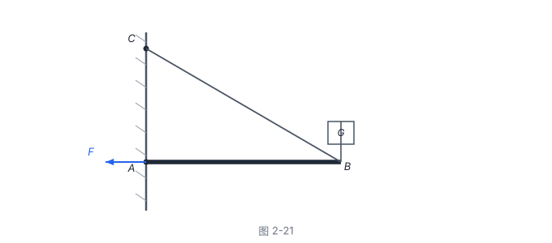
解因横梁所受物体对它的拉力 \( G \) 的大小和方向不变，绳的张力 \( T \) 方向不变，横梁始终处于平衡状态，所以三力的作用线必共于一点，为此，用力的矢量三角形法则作出如图 2-22 所示的一系列闭合三角形。
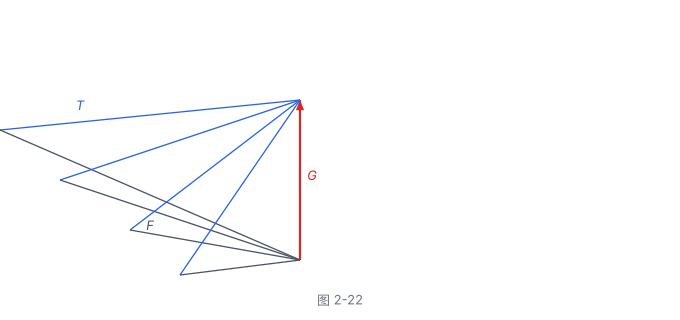
由图 2-22 可知，\( A \) 点作用力 \( F \) 由大变小再变大，其方向由水平逐渐变为竖直向上。所以，答案 D 是正确的。
例 12拉绳把小球提上大球面
如图 2-23 所示，重量为 \( G \) 的小球用细绳吊起，搁在一个光滑的大球面上，绳的另一端通过定滑轮 \( A \) 由人用力拉住。设 \( A \) 点在大球球心 \( O \) 点的正上方，当人用力 \( F \) 缓慢地拉绳时，拉力 \( F \) 和大球对小球的支持力 \( N \) 的变化是（ ）。
A. \( F \) 变大，\( N \) 变大 B. \( F \) 变大，\( N \) 变小 C. \( F \) 变小，\( N \) 不变 D. \( F \) 变大，\( N \) 不变
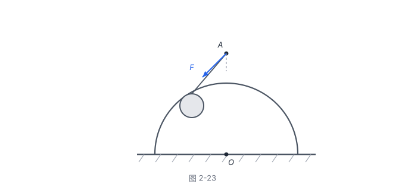
解因重力 \( G \) 的大小不变，大球对小球的支持力 \( N \) 的方向总是与球面垂直，且力的作用线要通过大球球心 \( O \) 点。我们可以用 \( AO \) 表示小球的重力 \( G \)。当人用力拉绳，小球缓慢地在大球球面上向上移动时，小球在大球表面各处所受支持力 \( N \) 的方向必通过圆心 \( O \)，且交圆弧上的 \( P_1 \)、\( P_2 \)、\( P_3 \cdots \) 各点。于是可作出如图 2-24 所示的一系列闭合三角形。
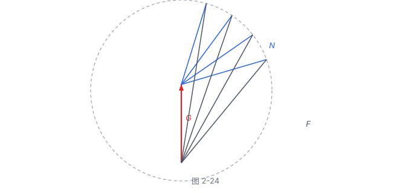
由图 2-24 可知，支持力 \( N \) 大小不变，绳的张力 \( F \) 将逐渐减小。因此正确答案是 C。